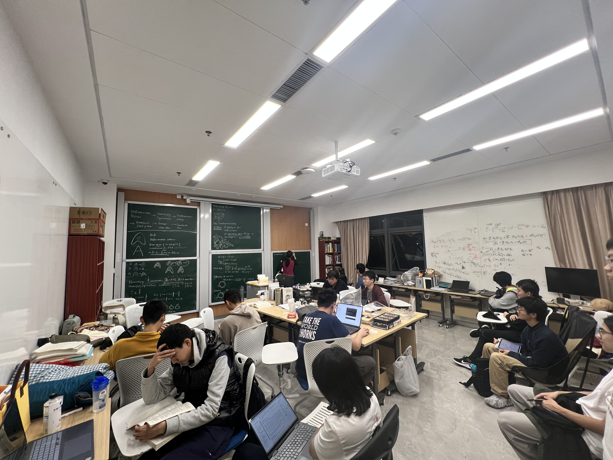

Abstract
由于球面的良好性质，其上的映射如果不是满射就是零伦，因此任何一个球面上的保径映射均不零伦。我们将首先从同伦等价的定义讲起，并介绍Borsuk-Ulam 定理。最后，作为该定理的简单应用，我们给出火腿三明治定理的一个证明。


M.Sc. student in Mathematics
University of Bonn
Bonn, Germany
s79jxi@uni-bonn.de由于球面的良好性质，其上的映射如果不是满射就是零伦，因此任何一个球面上的保径映射均不零伦。我们将首先从同伦等价的定义讲起，并介绍Borsuk-Ulam 定理。最后，作为该定理的简单应用，我们给出火腿三明治定理的一个证明。
